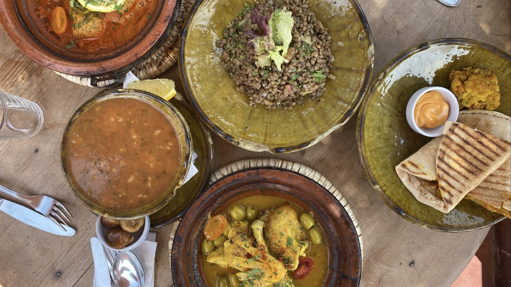

PLACE JEMAA EL FNA
Lieu historique
C’est souvent le premier lieu qui vient à l’esprit lorsque l’on pense à Marrakech: la place iconique. Il s’agit d’un symbole historique puisque la place existe depuis plusieurs centaines d’années. Son emplacement en fait un site très apprécié des touristes. Elle vous permet d’aller également visiter les souks de la ville, mondialement connus. Il faut savoir que la place Jemaa El-Fna attire plus qu’un million de voyageurs chaque année.
Vous y trouverez toutes les animations représentatives de la ville : des échoppes typiques, des musiciens mais également des danseurs et des charmeurs de serpents. Si vous souhaitez y manger en soirée, sachez que les restaurants ambulants arrivent à partir de 17h pour découvrir des mets locaux.
LES JARDINS SECRETS
Chef d'oeuvre de l'architecture islamique
Les origines du complexe remontent à l’époque de la dynastie saadienne, il y a plus de quatre cents ans. Reconstruit au milieu du XIXe siècle par un influent caïd de l’Atlas, Le Jardin Secret a été la demeure de quelques-unes des plus hautes personnalités politiques du Maroc et de Marrakech.
Le Jardin Secret, que l’on peut aujourd’hui apprécier pleinement grâce à sa récente restauration, fait partie de la grande tradition des palais arabo-andalous et marocains. Le visiteur peut ainsi découvrir les jardins et les édifices qui le composent et qui constituent autant de témoignages exceptionnels de l’art et de l’architecture islamiques.
PLACE DES ÉPICES
Les saveurs et parfums de Marrakech
Au coeur de la Medina de Marrakech, découvrez la place des épices aussi nommée Rahba Laqdima, était autrefois un marché destiné à la vente des grains et des esclaves. Aujourd'hui, cette place s'est donc tranformée en souk à ciel ouvert. Marchands et herboristes sont ainsi regroupés sur cette place trépidante où se rencontrent les couleurs et les senteurs des épices.
LES SOUKS
Promenade au coeur des marchés traditionnels
En visitant le Maroc, il est impensable de ne pas visiter les souks de Marrakech. Avec plus de 40 000 artisans, ils constituent les plus beaux de tout le Maghreb. Les souks de Marrakech se trouvent dans la Médina de la ville, le cœur historique. Ils ont été inscrits au Patrimoine Mondial de l’Unesco.
Babouches, tapis, vêtements, épices, noix, olives et mets locaux, les souks sont un véritable trésor

JARDIN MAJORELLE
Sur les traces d'Yves Saint Laurent
Acquis par Yves Saint Laurent et Pierre Bergé en 1980, le Jardin Majorelle est cette splendeur exotique qui attire les foules, venues découvrir sa ronde de plantes gigantesques et, surtout, sa maison au style mauresque baignée d'un bleu signature inspiré des couleurs de l'Atlas
Amoureux des paysages marocains et de sa flore luxuriante, l'artiste peintre Jacques Majorelle se crée au début des années 20 un lieu de résidence paradisiaque sur la terre rouge de Marrakech. Le Jardin Majorelle voit le jour en 1929. A l'intérieur, dominant le jardin exotique sillonné de cours d'eau et d'étangs remplis de nénuphars, trône une villa mauresque de type Art déco, pensé par l'architecte Paul Sinoir en 1931 où l'artiste installe son atelier au rez-de-chaussée. Sa couleur ? Bleu. Un bleu lumineux inspiré des eaux de l'Atlas, qui porte désormais le nom de bleu Majorelle. Une teinte assez rare et reconnaissable entre toutes.
PALAIS LA BAHIA
Une prouesse architecturale
Il fût en 1900 lors de sa construction le plus somptueux et le plus grand palais du Maroc. Avec plus de 150 pièces, une bonne partie richement décoré avec des peintures florales et des sculptures, plusieurs jardins plantés d’orangers, palmiers, grenadiers ainsi q'une cour gigantesque de 50 mètres sur 30.
Les jardins sont les plus agréables, lieux charmants bordés de romarins, orangers, pamplemousse et diverses fleurs jaunes, rouges, violettes. Un petit paradis de fraîcheur pour nous et les oiseaux. A l’intérieur du palais des pièces vidées de leur mobilier, des zelliges, des charpentes peintes de motifs végétaux, floraux et géométriques entêtant. Le lieu est immense. Aujourd'hui une seule partie du palais se visite, une autre acceuille parfois la famille royale ou les dignitaires étrangers. Des concerts y sont aussi organisés.
GASTRONOMIE MAROCAINE
Voyage culinaire
La cuisine marocaine se compose d'un certain nombre de plats qu'aucun voyageur ne devrait manquer. En fait, la dégustation de ces plats est une partie essentielle de ce qu'il faut faire à Marrakech, Essaouira ou toute autre ville du pays.
L'une des meilleures expériences de tout voyage est la découverte de la gastronomie, car ses saveurs, ses odeurs, ses assaisonnements et ses modes de préparation constituent une part importante de la culture. La cuisine marocaine, qui va des tajines au couscous, de la harira à la tangia, se caractérise par la présence d'épices qui en rehaussent grandement la saveur.
COUP DE COEUR
Kasbah Beldi
A l'origine une ferme cultivant oliviers, raisins et légumes, en respectant les traditions et les matériaux de la région, le site de 15 hectares a été aménagé pour profiter de la vue sur les montagnes de l'Atlas et sur un lac qui détonne dans le paysage désertique du sud Marocain.
Aujourd’hui, la Kasbah Beldi permet de s’évader de Marrakech pour la journée ou pour séjourner dans un cadre apaisant, à seulement 50 minutes de Marrakech.
Deux grandes piscines permettent de profiter du calme et de l’espace qu’offre la Kasbah Beldi. Une piscine pour enfant est aussi aménagée.Le potager de la Kasbah Beldi est aussi à visiter durant votre séjour.